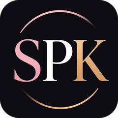

Vertrauen ist stärker als jede Grenze
Sarah Philine Koch ist Gründerin von SPK – Social Media und Para-Dressurreiterin im Grade III. Ihre Geschichte erzählt von einer Reiterin, die alles verlor und mit ihrer Stute My Milou einen neuen Weg fand — leise, ehrlich und ohne Umwege über die eigene Schwäche.

Sarah Philine Koch · Gründerin von SPKEine Verbindung, die trägt
Seit der Geburt ihrer Stute My Milou im Jahr 2020 verbindet die beiden eine Partnerschaft, die weit über den Sport hinausgeht. Schon als Fohlen war klar, dass My Milou etwas Besonderes ist: sensibel, klug und mit einem großen Herzen.
Was als eines von mehreren Pferden in Sarahs Zucht begann, wurde zur wichtigsten Beziehung ihres Lebens — und, wie sich später zeigen sollte, zu der Konstante, die alles trug, als für Sarah kaum noch etwas selbstverständlich war.
Milou spürt, wenn es mir nicht gut geht — sie reagiert feinfühliger, trägt mich, gibt mir Halt. Wir verstehen uns ohne Worte. Sarah Philine Koch
Ein neues Kapitel, geschrieben mit Mut
Sarah war viele Jahre erfolgreiche Springreiterin bis zur mittleren Klasse und widmete sich parallel der Zucht von Sportpferden. Mehrere ihrer Zuchtpferde sind heute erfolgreich im Sport und in der Zucht unterwegs — ein Beweis für ihr feines Gespür und ihre Liebe zur Pferdezucht.
Im November 2022 veränderte eine schwere gesundheitliche Krise, die im zeitlichen Zusammenhang mit einer Impfung auftrat, Sarahs Leben von Grund auf. Es folgte eine lange, harte Zeit: mehrere Blutvergiftungen, zwei Jahre im Rollstuhl und eine Phase künstlicher Ernährung. Dank moderner Hightech-Orthesen und konsequentem Training kann Sarah heute die meisten Strecken wieder gehen. Bis heute lebt sie mit bleibenden körperlichen Einschränkungen — unter anderem einer Halbseitenlähmung, einer Fußheberschwäche und CRPS in beiden Beinen —, die sie mit bemerkenswerter Disziplin in ihren Alltag integriert hat.
Was zunächst wie das Ende ihrer Reitkarriere aussah, wurde zum Anfang eines neuen Kapitels: Sarah fand ihren Weg in den Para-Dressursport, wo feine Hilfen, Balance und Vertrauen wichtiger sind als körperliche Kraft — und wo ihre Verbindung zu My Milou zur eigentlichen Stärke wurde. Hin und wieder wagen die beiden auch heute noch den ein oder anderen kleinen Sprung.
Erfolge, die für sich sprechen
In kurzer Zeit haben Sarah und My Milou beeindruckende Ergebnisse erzielt — getragen von Vertrauen, Präzision und ihrer besonderen Verbindung.
Zwei Dressursiege
Zwei Siege in Dressurwettbewerben mit einer Wertnote von 8,0 sowie zahlreiche weitere Platzierungen.
Bayerische Meisterschaft
Gesamtwertung Grades I–III bei der Bayerischen Meisterschaft in München-Riem.
Grade III
Bayerische Meisterschaften in München-Riem, Einzelwertung Grade III.
Aachen & Deutsche Meisterschaft
Ein Start in Aachen und die Teilnahme an der Deutschen Meisterschaft sind das erklärte nächste Ziel.
Aus einer persönlichen Geschichte wird eine Marke
Aus dem Wunsch, ihre Geschichte ehrlich zu erzählen und anderen Reiter:innen Mut zu machen, entstand SPK – Social Media: eine Marke für Social-Media-Coaching und Markenkooperationen im Pferdesport.
Sarah verbindet darin drei Perspektiven, die selten zusammenkommen: die einer Turnierreiterin, die einer erfahrenen Content-Creatorin und die einer Frau, die gelernt hat, mit Einschränkungen sichtbar zu sein, statt sich zu verstecken.
Daraus entstehen Inhalte, Coachings und Kooperationen, die nicht auf schnelle Reichweite zielen, sondern auf echte Verbindung — zur eigenen Community wie zu den Marken, mit denen SPK zusammenarbeitet.
Worauf SPK bei jeder Zusammenarbeit achtet
Reichweite lässt sich kaufen. Vertrauen nicht. Genau deshalb bleibt SPK bei aller Professionalisierung dem eigenen Anspruch treu:
Authentizität
Inhalte spiegeln echte Erfahrung wider — im Stallalltag ebenso wie im Turniersport.
Fachwissen
Ausbildung und Pferdesport werden fundiert und verantwortungsvoll dargestellt.
Community
Der Austausch mit der Reitsport-Community steht im Zentrum jeder Content-Strategie.
Sorgfalt
Tierwohl und ein respektvoller Umgang mit dem Pferd sind nicht verhandelbar.
Wohin die Reise geht
Sportlich hat Sarah ein klares Ziel vor Augen: der Sprung zur Deutschen Meisterschaft und ein Start in Aachen, einem der bedeutendsten Turnierplätze im Pferdesport.
Unternehmerisch will SPK – Social Media weiter wachsen: als verlässlicher Partner für Reiter:innen und Ställe, die ihre Präsenz professionalisieren wollen, und als Gesicht für Marken aus dem Pferdesport, die glaubwürdig und langfristig kommunizieren möchten.
Ich habe in Milou mein Seelenpferd gefunden. Sie ist mein größtes Glück — und mein Weg zurück ins Leben. Sarah Philine Koch